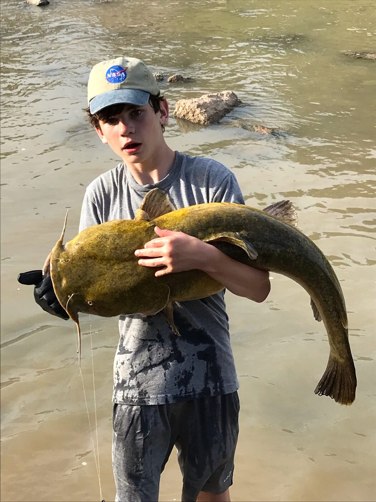
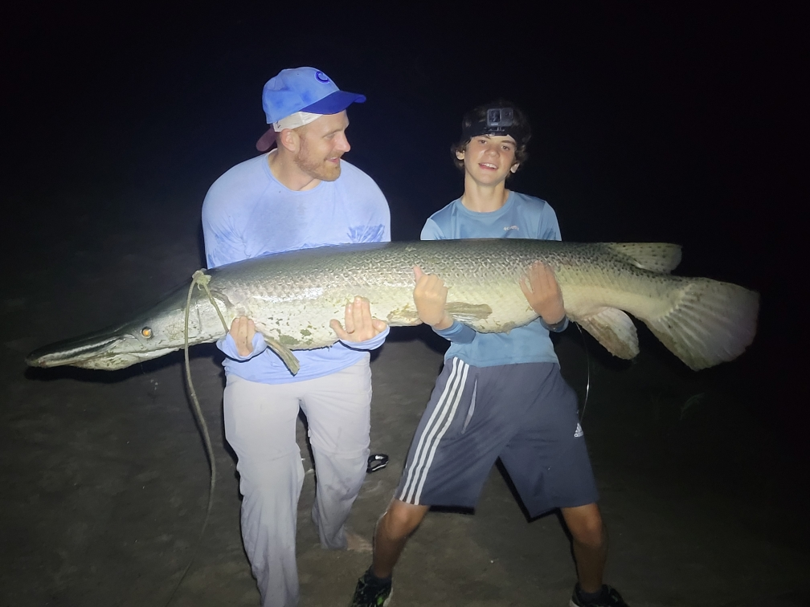
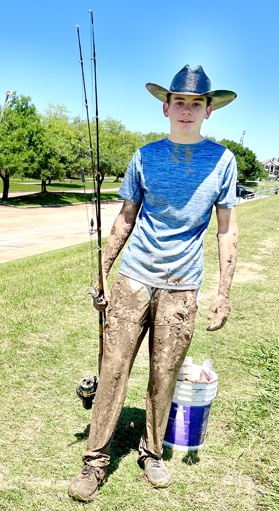

Our Story
A shared love of fishing.
A rod built together.
A story that continues.
Fishing gave my son Logan and me countless days and nights together on the water. One of the last things we did together was build a custom fishing rod—choosing the details, working side by side, and creating something that belonged to our story.

01 / Where Forever Rods began
Logan set off for school on his bike on what was supposed to be another completely ordinary morning in the fall of 2023. He never came home.
Less than two blocks from our home, he was struck and killed in a crosswalk by a reckless driver who had ingested marijuana.
After Logan was killed, that rod came to mean even more. Forever Rods grew from a desire to honor him through the craft we shared—and to help other people create rods that hold something meaningful of their own.


02 / The person behind the mark
Logan is at the heart of Forever Rods.
The silhouette in the Forever Rods logo is Logan, holding a fishing rod in one hand and a fish in the other. It is a reminder of the person at the heart of this company and the bond that inspired it.
His story will always be part of every rod I build. To see Logan doing what he loved, visit his YouTube channel, @Krazyfishkid.
03 / More than just another rod
Built around the person who will carry it.
Every Forever Rod begins by learning who it is for. The inspiration might come from a lifelong love of fishing, but it might also come from a milestone, a memory, a favorite place, or a passion that has nothing to do with the water.
Those stories shape the colors, wraps, components, and small personal details. The result is an exceptional fishing rod designed to perform—and to carry something more onto the water.
Built for your story
Let’s turn it into a rod.
Tell me who it is for, how they fish, and what makes their story their own.
Email Forever Rods Follow @foreverrodsco on Instagram